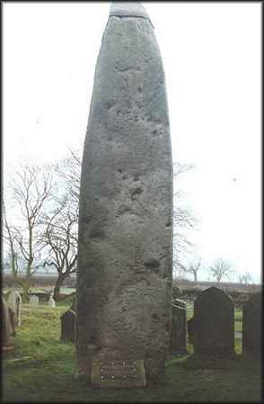
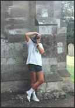

Rudston Monolith
Rudston Monolith
Yorkshire

Rudston Monolith, at 26ft high, is the tallest standing stone in the country, and situated in the churchyard in the village of Rudston five miles from a town called Bridlington, near us in the East Riding of

Yorkshire. The stone is made of gritstone, the nearest source of which is ten miles away. Legend says that the devil was annoyed with the villagers and threw a stone javelin at the church, missing it by a mere 12ft, burying half its length in the ground The church is on a mound, which is typical of many churches, indicating that there was probably a pre Christian site there before. The stone dowses well, with powerful energy lines, one of which runs through one of the yew trees there. There is also a power spot inside the church which can be felt quite easily if one walks across the aisle in bare feet!! There are many tumuli, barrows and ancient dykes in the area. (Unfortunately, the stone is capped with metal to stop rain wearing it away, which detracts somewhat from its appearance).